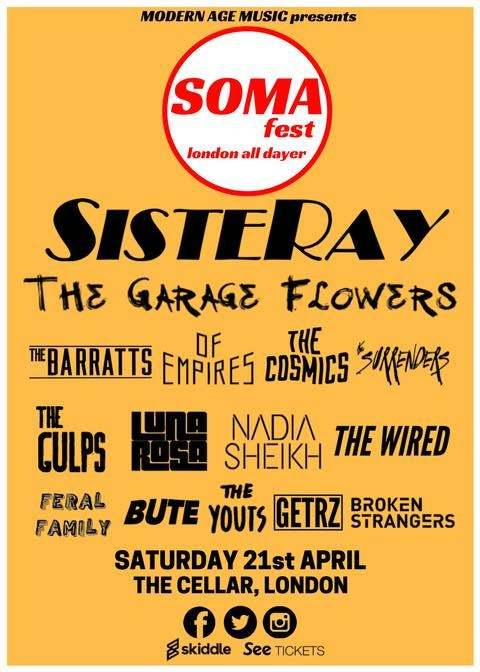

HEADS UP: SOMA FEST LONDON ALL DAYER

This weekend sees the brightest hopes for the future of the garage rock scene descend on the Finborough Arms in West Brompton. Featuring performances by Nadia Sheikh, The Wired and our very good friends The Garage Flowers, this all-day festival offers the opportunity to catch a thrilling line up of a new-breed of artists in an incredibly intimate setting, before they continue their march towards playing bigger and bigger venues. Topping the bill are London’s ‘Sisteray’, fresh from releasing rip-roaring new single ‘Algorithm Prism’, whose guerrilla gigs around the capital have earned them a reputation as fearsome live act not to be missed.
‘There is an incredible underground scene for guitar music in the UK’, say the event organisers, ‘it doesn't seem to be getting all the credit it deserves from the mainstream press, but it's booming.’ Hoping to turn this around by bringing these fifteen acts together, plans for a second instalment of SOMA is already under-way: stay tuned for more details.
Tickets are £7.00 and are now sold out, so if you don’t want to be kicking yourself for missing this in ten years’ time, we’d recommend heading to the facebook event to grab any available on resale.
See you in the mosh!
TIMINGS
Doors: 12.30pm
1.00
- 1.25: The
Youts
1.40
- 2.05: Broken
Strangers
2.20
- 2.45: BUTE
3.00
- 3.25: Feral
Family
3.40
- 4.05: Nadia
Sheikh
4.20
- 4.45: GETRZ
5.00
- 5.25: LUNA
ROSA
5.40
- 6.05: Of
Empires
6.20
- 6.45: The
Wired
7.00
- 7.25: The
Gulps
7.40
- 8.05: The
Barratts
8.20
- 8.45: The
Surrenders
9.00
- 9.25: The
Cosmics
9.40
- 10.10: The
Garage Flowers
10.30
-11.00: SISTERAY
DETAILS
Date: 21/04/2018
Address: 118 Finborough Road, SW10 9ED, London
Event: https://www.facebook.com/events/150406402413917/
back to main